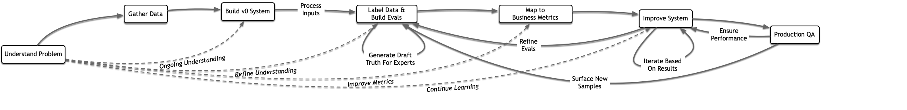
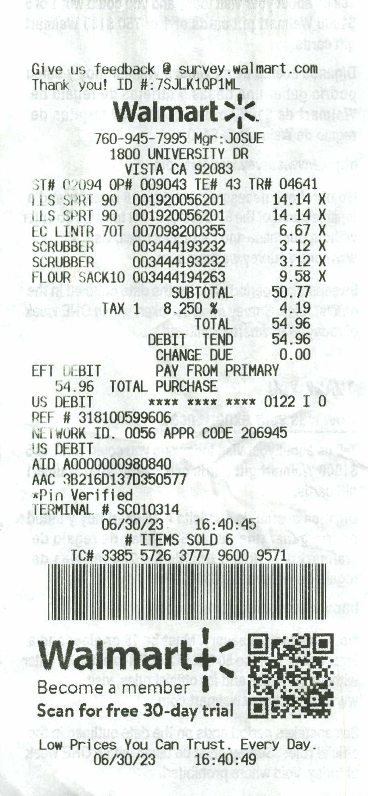
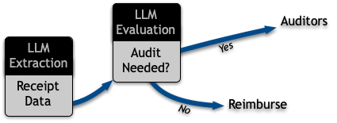
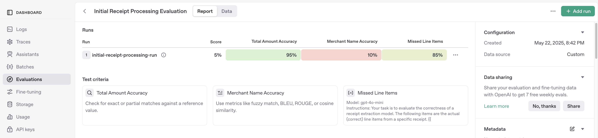
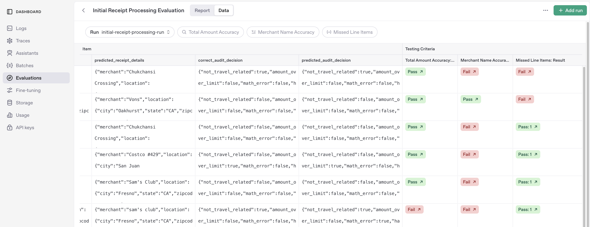
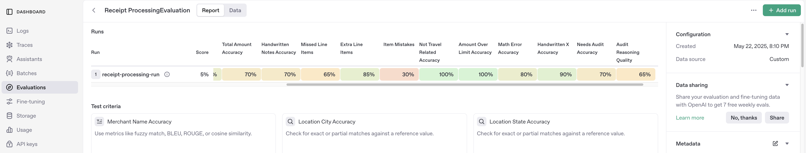
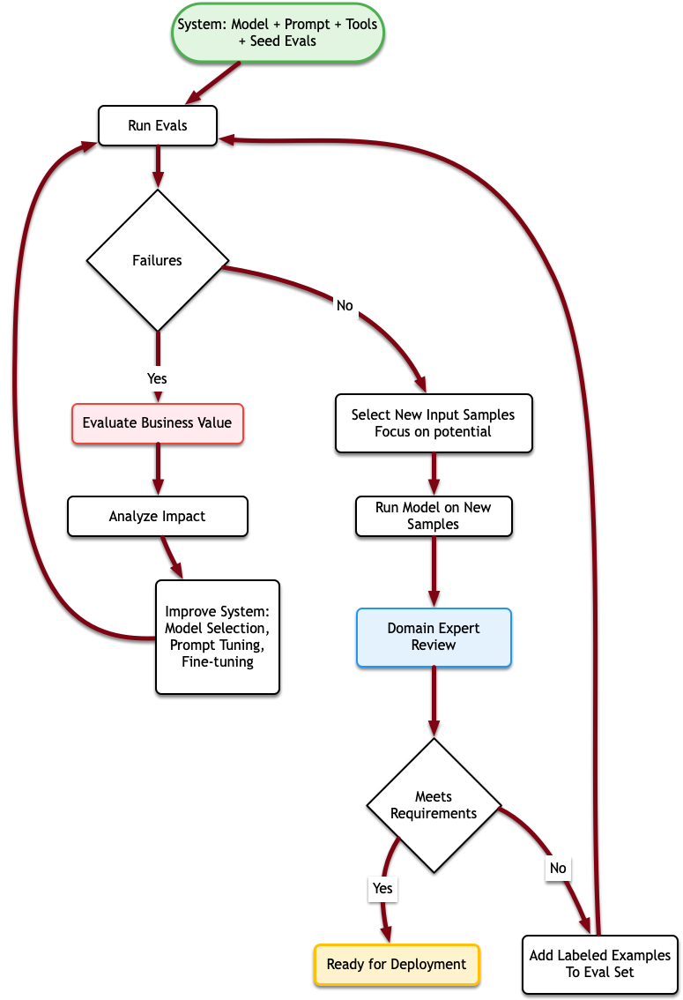
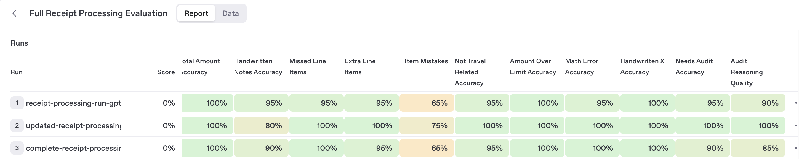
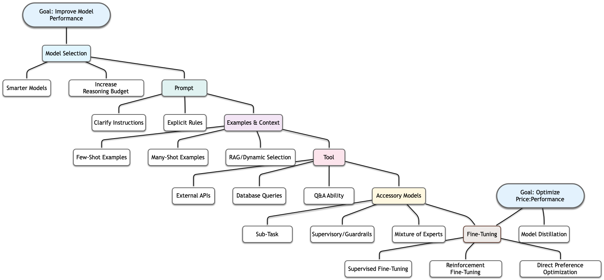

Overview
Purpose of This Cookbook
This cookbook provides a practical, end-to-end guide on how to effectively use evals as the core process in creating a production-grade autonomous system to replace a labor-intensive human workflow. It’s a direct product of collaborative experience dealing with projects where users may not have started with pristine labeled data or a perfect understanding of the problem - two issues that most tutorials gloss over but are in practice almost always serious challenges.
Making evals the core process prevents poke-and-hope guesswork and impressionistic judgments of accuracy, instead demanding engineering rigor. This means we can make principled decisions about cost trade-offs and investment.
Target Audience
This guide is designed for ML/AI engineers and Solution Architects who are looking for practical guidance beyond introductory tutorials. This notebook is fully executable and organized to be as modular as possible to support using code samples directly in your own applications.
Guiding Narrative: From Tiny Seed to Production System
We’ll follow a realistic storyline: replacing a manual receipt-analysis service for validating expenses.
- Start Small: Begin with a very small set of labeled data (retail receipts). Many businesses don’t have good ground truth data sets.
- Build Incrementally: Develop a minimal viable system and establish initial evals.
- Business Alignment: Evaluate eval performance in the context of business KPIs and dollar impact, and target efforts to avoid working on low-impact improvements.
- Eval-Driven Iteration: Iteratively improve by using eval scores to power model improvements, then by using better models on more data to expand evals and identify more areas for improvement.
How to Use This Cookbook
This cookbook is structured as an eval-centric guide through the lifecycle of building an LLM application.
- If you’re primarily interested in the ideas presented, read through the text and skim over the code.
- If you’re here because of something else you’re working on, you can go ahead and jump to that section and dig into the code there, copy it, and adapt it to your needs.
- If you want to really understand how this all works, download this notebook and run the cells as you read through it; edit the code to make your own changes, test your hypotheses, and make sure you actually understand how it all works together.
Note: If your OpenAI organization has a Zero Data Retention (ZDR) policy, Evals will still be available, but will retain data to maintain application state.
Use Case: Receipt Parsing
In order to condense this guide we’ll be using a small hypothetical problem that’s still complex enough to merit detailed and multi-faceted evals. In particular, we’ll be focused on how to solve a problem given a limited amount of data to work with, so we’re working with a dataset that’s quite small.
Problem Definition
For this guide, we assume that we are starting with a workflow for reviewing and filing receipts. While in general, this is a problem that already has a lot of established solutions, it’s analogous to other problems that don’t have nearly so much prior work; further, even when good enterprise solutions exist there is often still a “last mile” problem that still requires human time.
In our case, we’ll assume we have a pipeline where:
- People upload photos of receipts
- An accounting team reviews each receipt to categorize and approve or audit the expense
Based on interviews with the accounting team, they make their decisions based on
- Merchant
- Geographic location
- Expense amount
- Items or services purchased
- Handwritten notes or annotations
Our system will be expected to handle most receipts without any human intervention, but escalate low-confidence decisions for human QA. We’ll be focused on reducing the total cost of the accounting process, which is dependent on
- How much the previous / current system cost to run per-receipt
- How many receipts the new system sends to QA
- How much the system costs to run per-receipt, plus any fixed costs
- What the business impact is of mistakes, either receipts kicked out for review or mistakes missed
- The cost of engineering to develop and integrate the system
Dataset Overview
The receipt images come from the CC by 4.0 licensed Receipt Handwriting Detection Computer Vision Project dataset published by Roboflow. We’ve added our own labels and narrative spin in order to tell a story with a small number of examples.
Project Lifecycle
Not every project will proceed in the same way, but projects generally have some important components in common.

The solid arrows show the primary progressions or steps, while the dotted line represents the ongoing nature of problem understanding - uncovering more about the customer domain will influence every step of the process. We will examine several of these iterative cycles of refinement in detail below. Not every project will proceed in the same way, but projects generally have some common important components.
1. Understand the Problem
Usually, the decision to start an engineering process is made by leadership who understand the business impact but don’t need to know the process details. In our example, we’re building a system designed to replace a non-AI workflow. In a sense this is ideal: we have a set of domain experts, the people currently doing the task who we can interview to understand the task details and who we can lean upon to help develop appropriate evals.
This step doesn’t end before we start building our system; invariably, our initial assessments are an incomplete understanding of the problem space and we will continue to refine our understanding as we get closer to a solution.
2. Assemble Examples (Gather Data)
It’s very rare for a real-world project to begin with all the data necessary to achieve a satisfactory solution, let alone establish confidence.
In our case, we’ll assume we have a decent sample of system inputs, in the form of but receipt images, but start without any fully annotated data. We find this is a not-unusual situation when automating an existing process. We’ll walk through the process of incrementally expanding our test and training sets in collaboration with domain experts as we go along and make our evals progressively more comprehensive.
3. Build an End-to-End V0 System
We want to get the skeleton of a system built as quickly as possible. We don’t need a system that performs well - we just need something that accepts the right inputs and provides outputs of the correct type. Usually this is almost as simple as describing the task in a prompt, adding the inputs, and using a single model (usually with structured outputs) to make an initial best-effort attempt.
4. Label Data and Build Initial Evals
We’ve found that in the absence of an established ground truth, it’s not uncommon to use an early version of a system to generate ‘draft’ truth data which can be annotated or corrected by domain experts.
Once we have an end-to-end system constructed, we can start processing the inputs we have to generate plausible outputs. We’ll send these to our domain experts to grade and correct. We will use these corrections and conversations about how the experts are making their decisions to design further evals and to embed expertise in the system.
5. Map Evals to Business Metrics
Before we jump into correcting every error, we need to make sure that we’re investing time effectively. The most critical task at this stage is to review our evals and gain an understanding of how they connect to our key objectives.
- Step back and assess the potential costs and benefits of the system
- Identify which eval measurements speak directly to those costs and benefits
- For example, what does “failure” on a particular eval cost? Are we measuring something worthwhile?
- Create a (non-LLM) model that uses eval metrics to provide a dollar value
- Balance performance (accuracy, or speed) with cost to develop and run
6. Progressively Improve System and Evals
Having identified which efforts are most worth making, we can begin iterating on improvements to the system. The evals act as an objective guide so we know when we’ve made the system good enough, and ensure we avoid or identify regression.
7. Integrate QA Process and Ongoing Improvements
Evals aren’t just for development. Instrumenting all or a portion of a production service will surface more useful test and training samples over time, identifying incorrect assumptions or finding areas with insufficient coverage. This is also the only way you can ensure that your models continue performing well long after your initial development process is complete.
V0 System Construction
In practice, we would probably be building a system that operates via a REST API,
possibly with some web frontend that would have access to some set of components and
resources. For the purposes of this cookbook, we’ll distill that down to a pair of
functions, extract_receipt_details and evaluate_receipt_for_audit that collectively
decide what we should do with a given receipt.
extract_receipt_detailswill take an image as input and produce structured output containing important details about the receipt.evaluate_receipt_for_auditwill take that structure as input and decide whether or not the receipt should be audited.
Breaking up a process into steps like this has both pros and cons; it is easier to examine and develop if the process is made up of small isolated steps. But you can progressively lose information, effectively letting your agents play “telephone”. In this notebook we break up the steps and don’t let the auditor see the actual receipt because it’s more instructive for the evals we want to discuss.
We’ll start with the first step, the literal data extraction. This is intermediate data: it’s information that people would examine implicitly, but often isn’t recorded. And for this reason, we often don’t have labeled data to work from.
%pip install --upgrade openai pydantic python-dotenv rich persist-cache -qqq
%load_ext dotenv
%dotenv
# Place your API key in a file called .env
# OPENAI_API_KEY=sk-...Structured Output Model
Capture the meaningful information in a structured output.
from pydantic import BaseModel
class Location(BaseModel):
city: str | None
state: str | None
zipcode: str | None
class LineItem(BaseModel):
description: str | None
product_code: str | None
category: str | None
item_price: str | None
sale_price: str | None
quantity: str | None
total: str | None
class ReceiptDetails(BaseModel):
merchant: str | None
location: Location
time: str | None
items: list[LineItem]
subtotal: str | None
tax: str | None
total: str | None
handwritten_notes: list[str]Note: Normally we would use
decimal.Decimalobjects for the numbers above anddatetime.datetimeobjects fortimefield, but neither of those deserialize well. For the purposes of this cookbook, we’ll work with strings, but in practice you’d want to have another level of translation to get the correct output validated.
Basic Info Extraction
Let’s build our extract_receipt_details function.
Usually, for the very first stab at something that might work, we’ll simply feed ChatGPT the available documents we’ve assembled so far and ask it to generate a prompt. It’s not worth spending too much time on prompt engineering before you have a benchmark to grade yourself against! This is a prompt produced by o4-mini based on the problem description above.
BASIC_PROMPT = """
Given an image of a retail receipt, extract all relevant information and format it as a structured response.
# Task Description
Carefully examine the receipt image and identify the following key information:
1. Merchant name and any relevant store identification
2. Location information (city, state, ZIP code)
3. Date and time of purchase
4. All purchased items with their:
* Item description/name
* Item code/SKU (if present)
* Category (infer from context if not explicit)
* Regular price per item (if available)
* Sale price per item (if discounted)
* Quantity purchased
* Total price for the line item
5. Financial summary:
* Subtotal before tax
* Tax amount
* Final total
6. Any handwritten notes or annotations on the receipt (list each separately)
## Important Guidelines
* If information is unclear or missing, return null for that field
* Format dates as ISO format (YYYY-MM-DDTHH:MM:SS)
* Format all monetary values as decimal numbers
* Distinguish between printed text and handwritten notes
* Be precise with amounts and totals
* For ambiguous items, use your best judgment based on context
Your response should be structured and complete, capturing all available information
from the receipt.
"""import base64
import mimetypes
from pathlib import Path
from openai import AsyncOpenAI
client = AsyncOpenAI()
async def extract_receipt_details(
image_path: str, model: str = "o4-mini"
) -> ReceiptDetails:
"""Extract structured details from a receipt image."""
# Determine image type for data URI.
mime_type, _ = mimetypes.guess_type(image_path)
# Read and base64 encode the image.
b64_image = base64.b64encode(Path(image_path).read_bytes()).decode("utf-8")
image_data_url = f"data:{mime_type};base64,{b64_image}"
response = await client.responses.parse(
model=model,
input=[
{
"role": "user",
"content": [
{"type": "input_text", "text": BASIC_PROMPT},
{"type": "input_image", "image_url": image_data_url},
],
}
],
text_format=ReceiptDetails,
)
return response.output_parsedTest on one receipt
Let’s evaluate just a single receipt and review it manually to see how well a smart model with a naive prompt can do.

from rich import print
receipt_image_dir = Path("data/test")
ground_truth_dir = Path("data/ground_truth")
example_receipt = Path(
"data/train/Supplies_20240322_220858_Raven_Scan_3_jpeg.rf.50852940734939c8838819d7795e1756.jpg"
)
result = await extract_receipt_details(example_receipt)We’ll get different answers if we re-run it, but it usually gets most things correct with a few errors. Here’s a specific example:
walmart_receipt = ReceiptDetails(
merchant="Walmart",
location=Location(city="Vista", state="CA", zipcode="92083"),
time="2023-06-30T16:40:45",
items=[
LineItem(
description="SPRAY 90",
product_code="001920056201",
category=None,
item_price=None,
sale_price=None,
quantity="2",
total="28.28",
),
LineItem(
description="LINT ROLLER 70",
product_code="007098200355",
category=None,
item_price=None,
sale_price=None,
quantity="1",
total="6.67",
),
LineItem(
description="SCRUBBER",
product_code="003444193232",
category=None,
item_price=None,
sale_price=None,
quantity="2",
total="12.70",
),
LineItem(
description="FLOUR SACK 10",
product_code="003444194263",
category=None,
item_price=None,
sale_price=None,
quantity="1",
total="0.77",
),
],
subtotal="50.77",
tax="4.19",
total="54.96",
handwritten_notes=[],
)The model extracted a lot of things correctly, but renamed some of the line items - incorrectly, in fact. More importantly, it got some of the prices wrong, and it decided not to categorize any of the line items.
That’s okay, we don’t expect to have perfect answers at this point! Instead, our objective is to build a basic system we can evaluate. Then, when we start iterating, we won’t be ‘vibing’ our way to something that looks better – we’ll be engineering a reliable solution. But first, we’ll add an action decision to complete our draft system.
Action Decision
Next, we need to close the loop and get to an actual decision based on receipts. This looks pretty similar, so we’ll present the code without comment.
Ordinarily one would start with the most capable model - o3, at this time - for a
first pass, and then once correctness is established experiment with different models
to analyze any tradeoffs for their business impact, and potentially consider whether
they are remediable with iteration. A client may be willing to take a certain accuracy
hit for lower latency or cost, or it may be more effective to change the architecture
to hit cost, latency, and accuracy goals. We’ll get into how to make these tradeoffs
explicitly and objectively later on.
For this cookbook, o3 might be too good. We’ll use o4-mini for our first pass, so
that we get a few reasoning errors we can use to illustrate the means of addressing
them when they occur.
Next, we need to close the loop and get to an actual decision based on receipts. This looks pretty similar, so we’ll present the code without comment.
from pydantic import BaseModel, Field
audit_prompt = """
Evaluate this receipt data to determine if it need to be audited based on the following
criteria:
1. NOT_TRAVEL_RELATED:
- IMPORTANT: For this criterion, travel-related expenses include but are not limited
to: gas, hotel, airfare, or car rental.
- If the receipt IS for a travel-related expense, set this to FALSE.
- If the receipt is NOT for a travel-related expense (like office supplies), set this
to TRUE.
- In other words, if the receipt shows FUEL/GAS, this would be FALSE because gas IS
travel-related.
2. AMOUNT_OVER_LIMIT: The total amount exceeds $50
3. MATH_ERROR: The math for computing the total doesn't add up (line items don't sum to
total)
4. HANDWRITTEN_X: There is an "X" in the handwritten notes
For each criterion, determine if it is violated (true) or not (false). Provide your
reasoning for each decision, and make a final determination on whether the receipt needs
auditing. A receipt needs auditing if ANY of the criteria are violated.
Return a structured response with your evaluation.
"""
class AuditDecision(BaseModel):
not_travel_related: bool = Field(
description="True if the receipt is not travel-related"
)
amount_over_limit: bool = Field(description="True if the total amount exceeds $50")
math_error: bool = Field(description="True if there are math errors in the receipt")
handwritten_x: bool = Field(
description="True if there is an 'X' in the handwritten notes"
)
reasoning: str = Field(description="Explanation for the audit decision")
needs_audit: bool = Field(
description="Final determination if receipt needs auditing"
)
async def evaluate_receipt_for_audit(
receipt_details: ReceiptDetails, model: str = "o4-mini"
) -> AuditDecision:
"""Determine if a receipt needs to be audited based on defined criteria."""
# Convert receipt details to JSON for the prompt
receipt_json = receipt_details.model_dump_json(indent=2)
response = await client.responses.parse(
model=model,
input=[
{
"role": "user",
"content": [
{"type": "input_text", "text": audit_prompt},
{"type": "input_text", "text": f"Receipt details:\n{receipt_json}"},
],
}
],
text_format=AuditDecision,
)
return response.output_parsedA schematic of the overall process shows two LLM calls:

If we run our above example through this model, here’s what we get – again, we’ll use an example result here. When you run the code you might get slightly different results.
audit_decision = await evaluate_receipt_for_audit(result)
print(audit_decision)audit_decision = AuditDecision(
not_travel_related=True,
amount_over_limit=True,
math_error=False,
handwritten_x=False,
reasoning="""
The receipt from Walmart is for office supplies, which are not travel-related, thus NOT_TRAVEL_RELATED is TRUE.
The total amount of the receipt is $54.96, which exceeds the limit of $50, making AMOUNT_OVER_LIMIT TRUE.
The subtotal ($50.77) plus tax ($4.19) correctly sums to the total ($54.96), so there is no MATH_ERROR.
There are no handwritten notes, so HANDWRITTEN_X is FALSE.
Since two criteria (amount over limit and travel-related) are violated, the receipt
needs auditing.
""",
needs_audit=True,
)This example illustrates why we care about end-to-end evals and why we can’t use them in isolation. Here, the initial extraction had OCR errors and forwarded the prices to the auditor that don’t add up to the total, but the auditor fails to detect it and asserts there are no math errors. However, missing this doesn’t change the audit decision because it did pick up on the other two reasons the receipt needs to be audited.
Thus, AuditDecision is factually incorrect, but the decision that we care about
is correct. This gives us an edge to improve upon, but also guides us toward making
sound choices for where and when we apply our engineering efforts.
With that said, let’s build ourselves some evals!
Initial Evals
Once we have a minimally functional system we should process more inputs and get domain experts to help develop ground-truth data. Domain experts doing expert tasks may not have much time to devote to our project, so we want to be efficient and start small, aiming for breadth rather than depth at first.
If your data doesn’t require domain expertise, then you’d want to reach for a labeling solution (such as Label Studio) and attempt to annotate as much data as you can given the policy, budget, and data availability restrictions. In this case, we’re going to proceed as if data labeling is a scarce resource; one we can rely on for small amounts each week, but these are people with other job responsibilities whose time and willingness to help may be limited. Sitting with these experts to help annotate examples can help make selecting future examples more efficient.
Because we have a chain of two steps, we’ll be collecting tuples of type
[FilePath, ReceiptDetails, AuditDecision]. Generally, the way to do this is to take
unlabeled samples, run them through our model, and then have experts correct the output.
For the purposes of this notebook, we’ve already gone through that process for all the
receipt images in data/test.
Additional Considerations
There’s a little more to it than that though, because when you are evaluating a multistep process it’s important to know both the end to end performance and the performance of each individual step, conditioned on the output of the prior step.
In this case, we want to evaluate:
- Given an input image, how well do we extract the information we need?
- Given receipt information, how good is our judgement for our audit decision?
- Given an input image, how successful are we about making our final audit decision?
The phrasing difference between #2 and #3 is because if we give our auditor incorrect data, we expect it to come to incorrect conclusions. What we want is to be confident that the auditor is making the correct decision based on the evidence available, even if that evidence is misleading. If we don’t pay attention to that case, we can end up training the auditor to ignore its inputs and cause our overall performance to degrade.
Graders
The core component of an eval is the grader. Our eventual eval is going to use 18 of them, but we only use three kinds, and they’re all quite conceptually straightforward.
Here are examples of one of our string check graders, one of our text similarity graders, and finally one of our model graders.
example_graders = [
{
"name": "Total Amount Accuracy",
"type": "string_check",
"operation": "eq",
"input": "{{ item.predicted_receipt_details.total }}",
"reference": "{{ item.correct_receipt_details.total }}",
},
{
"name": "Merchant Name Accuracy",
"type": "text_similarity",
"input": "{{ item.predicted_receipt_details.merchant }}",
"reference": "{{ item.correct_receipt_details.merchant }}",
"pass_threshold": 0.8,
"evaluation_metric": "bleu",
},
]
# A model grader needs a prompt to instruct it in what it should be scoring.
missed_items_grader_prompt = """
Your task is to evaluate the correctness of a receipt extraction model.
The following items are the actual (correct) line items from a specific receipt.
{{ item.correct_receipt_details.items }}
The following items are the line items extracted by the model.
{{ item.predicted_receipt_details.items }}
Score 0 if the sample evaluation missed any items from the receipt; otherwise score 1.
The line items are permitted to have small differences or extraction mistakes, but each
item from the actual receipt must be present in some form in the model's output. Only
evaluate whether there are MISSED items; ignore other mistakes or extra items.
"""
example_graders.append(
{
"name": "Missed Line Items",
"type": "score_model",
"model": "o4-mini",
"input": [{"role": "system", "content": missed_items_grader_prompt}],
"range": [0, 1],
"pass_threshold": 1,
}
)Each grader evaluates some portion of a predicted output. This might be a very narrow check for a specific field in a structured output, or a more holistic check that judges an output in its entirety. Some graders can work without context, and evaluate an output in isolation (for example, an LLM judge that is evaluating if a paragraph is rude or inappropriate). Others can evaluate based on the input and output, while the ones we’re using here rely on an output and a ground-truth (correct) output to compare against.
The most direct way of using Evals provides a prompt and a model, and lets the eval run
on an input to generate output itself. Another useful method uses previously logged
responses or completions as the source of the outputs. It’s not quite as simple, but the
most flexible thing we can do is to supply an item containing everything we want it to
use—this allows us to have the “prediction” function be an arbitrary system rather than
restricting it to a single model call. This is how we’re using it in the examples below;
the EvaluationRecord shown below will be used to populate the {{ }} template
variables.
Note on Model Selection:
Selecting the right model is crucial. While faster, less expensive models are often preferable in production, development workflows benefit from prioritizing the most capable models available. For this guide, we useo4-minifor both system tasks and LLM-based grading—whileo3is more capable, our experience suggests the difference in output quality is modest relative to the substantial increase in cost. In practice, spending $10+/day/engineer on evals is typical, but scaling to $100+/day/engineer may not be sustainable.Nonetheless, it’s valuable to periodically benchmark with a more advanced model like
o3. If you observe significant improvements, consider incorporating it for a representative subset of your evaluation data. Discrepancies between models can reveal important edge cases and guide system improvements.
import asyncio
class EvaluationRecord(BaseModel):
"""Holds both the correct (ground truth) and predicted audit decisions."""
receipt_image_path: str
correct_receipt_details: ReceiptDetails
predicted_receipt_details: ReceiptDetails
correct_audit_decision: AuditDecision
predicted_audit_decision: AuditDecision
async def create_evaluation_record(image_path: Path, model: str) -> EvaluationRecord:
"""Create a ground truth record for a receipt image."""
extraction_path = ground_truth_dir / "extraction" / f"{image_path.stem}.json"
correct_details = ReceiptDetails.model_validate_json(extraction_path.read_text())
predicted_details = await extract_receipt_details(image_path, model)
audit_path = ground_truth_dir / "audit_results" / f"{image_path.stem}.json"
correct_audit = AuditDecision.model_validate_json(audit_path.read_text())
predicted_audit = await evaluate_receipt_for_audit(predicted_details, model)
return EvaluationRecord(
receipt_image_path=image_path.name,
correct_receipt_details=correct_details,
predicted_receipt_details=predicted_details,
correct_audit_decision=correct_audit,
predicted_audit_decision=predicted_audit,
)
async def create_dataset_content(
receipt_image_dir: Path, model: str = "o4-mini"
) -> list[dict]:
# Assemble paired samples of ground truth data and predicted results. You could
# instead upload this data as a file and pass a file id when you run the eval.
tasks = [
create_evaluation_record(image_path, model)
for image_path in receipt_image_dir.glob("*.jpg")
]
return [{"item": record.model_dump()} for record in await asyncio.gather(*tasks)]
file_content = await create_dataset_content(receipt_image_dir)Once we have the graders and the data, creating and running our evals is very straightforward:
from persist_cache import cache
# We're caching the output so that if we re-run this cell we don't create a new eval.
@cache
async def create_eval(name: str, graders: list[dict]):
eval_cfg = await client.evals.create(
name=name,
data_source_config={
"type": "custom",
"item_schema": EvaluationRecord.model_json_schema(),
"include_sample_schema": False, # Don't generate new completions.
},
testing_criteria=graders,
)
print(f"Created new eval: {eval_cfg.id}")
return eval_cfg
initial_eval = await create_eval(
"Initial Receipt Processing Evaluation", example_graders
)
# Run the eval.
eval_run = await client.evals.runs.create(
name="initial-receipt-processing-run",
eval_id=initial_eval.id,
data_source={
"type": "jsonl",
"source": {"type": "file_content", "content": file_content},
},
)
print(f"Evaluation run created: {eval_run.id}")
print(f"View results at: {eval_run.report_url}")After you run that eval you’ll be able to view it in the UI, and should see something like the below.
(Note, if you have a Zero-Data-Retention agreement, this data is not stored by OpenAI, so will not be available in this interface.) like:

You can drill into the data tab to look at individual examples:

Connecting Evals to Business Metrics
Evals show you where you can improve, and help track progress and regressions over time. But the three evals above are just measurements — we need to imbue them with raison d’être.
The first thing we need is to add evaluations for the final stage of our receipt processing, so that we can start seeing the results of our audit decisions. The next thing we need, the most important, is a model of business relevance.
A Business Model
It’s almost never easy to work out what costs and benefits you could get out of a new system depending on how well it performs. Often people will avoid trying to put numbers to things because they know how much uncertainty there is and they don’t want to make guesses that make them look bad. That’s okay; we just have to make our best guess, and if we get more information later we can refine our model.
For this cookbook, we’re going to create a simple cost structure:
- our company processes 1 million receipts a year, at a baseline cost of $0.20 / receipt
- auditing a receipt costs about $2
- failing to audit a receipt we should have audited costs an average of $30
- 5% of receipts need to be audited
- the existing process
- identifies receipts that need to be audited 97% of the time
- misidentifies receipts that don’t need to be audited 2% of the time
This gives us two baseline comparisons:
- if we identified every receipt correctly, we would spend $100,000 on audits
- our current process spends $135,000 on audits and loses $45,000 to un-audited expenses
On top of that, the human-driven process costs an additional $200,000.
We’re expecting our service to save money by costing less to run (≈1¢/receipt if we use
the prompts from above with o4-mini), but whether we save or lose money on audits and
missed audits depends on how well our system performs. It might be worth writing this as
a simple function — written below is a version that includes the above factors but
neglects nuance and ignores development, maintenance, and serving costs.
def calculate_costs(fp_rate: float, fn_rate: float, per_receipt_cost: float):
audit_cost = 2
missed_audit_cost = 30
receipt_count = 1e6
audit_fraction = 0.05
needs_audit_count = receipt_count * audit_fraction
no_needs_audit_count = receipt_count - needs_audit_count
missed_audits = needs_audit_count * fn_rate
total_audits = needs_audit_count * (1 - fn_rate) + no_needs_audit_count * fp_rate
audit_cost = total_audits * audit_cost
missed_audit_cost = missed_audits * missed_audit_cost
processing_cost = receipt_count * per_receipt_cost
return audit_cost + missed_audit_cost + processing_cost
perfect_system_cost = calculate_costs(0, 0, 0)
current_system_cost = calculate_costs(0.02, 0.03, 0.20)
print(f"Current system cost: ${current_system_cost:,.0f}")Connecting Back To Evals
The point of the above model is it lets us apply meaning to an eval that would otherwise just be a number. For instance, when we ran the system above we were wrong 85% of the time for merchant names. But digging in, it seems like most instances are capitalization issues or “Shell Gasoline” vs. “Shell Oil #2144” — problems that when we follow through, do not appear to affect our audit decision or change our fundamental costs.
On the other hand, it seems like we fail to catch handwritten “X”s on receipts about half the time, and about half of the time when there’s an “X” on a receipt that gets missed, it results in a receipt not getting audited when it should. Those are overrepresented in our dataset, but if that makes up even 1% of receipts, that 50% failure would cost us $75,000 a year.
Similarly, it seems like we have OCR errors that cause us to audit receipts quite often on account of the math not working out, up to 20% of the time. This could cost us almost $400,000!
Now, we’re in a place to add more graders and start working backwards from the audit decision accuracy to determine which problems we should focus on.
Below are the rest of our graders and the results we get with our initial un-optimized prompts. Note that at this point we do quite badly! Across our 20 samples (8 positive, 12 negative), we had two false negatives and two false positives. If we extrapolated to our entire business, we’d be losing $375,000 on audits we missed and $475,000 on unnecessary audits.
simple_extraction_graders = [
{
"name": "Merchant Name Accuracy",
"type": "text_similarity",
"input": "{{ item.predicted_receipt_details.merchant }}",
"reference": "{{ item.correct_receipt_details.merchant }}",
"pass_threshold": 0.8,
"evaluation_metric": "bleu",
},
{
"name": "Location City Accuracy",
"type": "string_check",
"operation": "eq",
"input": "{{ item.predicted_receipt_details.location.city }}",
"reference": "{{ item.correct_receipt_details.location.city }}",
},
{
"name": "Location State Accuracy",
"type": "string_check",
"operation": "eq",
"input": "{{ item.predicted_receipt_details.location.state }}",
"reference": "{{ item.correct_receipt_details.location.state }}",
},
{
"name": "Location Zipcode Accuracy",
"type": "string_check",
"operation": "eq",
"input": "{{ item.predicted_receipt_details.location.zipcode }}",
"reference": "{{ item.correct_receipt_details.location.zipcode }}",
},
{
"name": "Time Accuracy",
"type": "string_check",
"operation": "eq",
"input": "{{ item.predicted_receipt_details.time }}",
"reference": "{{ item.correct_receipt_details.time }}",
},
{
"name": "Subtotal Amount Accuracy",
"type": "string_check",
"operation": "eq",
"input": "{{ item.predicted_receipt_details.subtotal }}",
"reference": "{{ item.correct_receipt_details.subtotal }}",
},
{
"name": "Tax Amount Accuracy",
"type": "string_check",
"operation": "eq",
"input": "{{ item.predicted_receipt_details.tax }}",
"reference": "{{ item.correct_receipt_details.tax }}",
},
{
"name": "Total Amount Accuracy",
"type": "string_check",
"operation": "eq",
"input": "{{ item.predicted_receipt_details.total }}",
"reference": "{{ item.correct_receipt_details.total }}",
},
{
"name": "Handwritten Notes Accuracy",
"type": "text_similarity",
"input": "{{ item.predicted_receipt_details.handwritten_notes }}",
"reference": "{{ item.correct_receipt_details.handwritten_notes }}",
"pass_threshold": 0.8,
"evaluation_metric": "fuzzy_match",
},
]
item_extraction_base = """
Your task is to evaluate the correctness of a receipt extraction model.
The following items are the actual (correct) line items from a specific receipt.
{{ item.correct_receipt_details.items }}
The following items are the line items extracted by the model.
{{ item.predicted_receipt_details.items }}
"""
missed_items_instructions = """
Score 0 if the sample evaluation missed any items from the receipt; otherwise score 1.
The line items are permitted to have small differences or extraction mistakes, but each
item from the actual receipt must be present in some form in the model's output. Only
evaluate whether there are MISSED items; ignore other mistakes or extra items.
"""
extra_items_instructions = """
Score 0 if the sample evaluation extracted any extra items from the receipt; otherwise
score 1.
The line items are permitted to have small differences or extraction mistakes, but each
item from the actual receipt must be present in some form in the model's output. Only
evaluate whether there are EXTRA items; ignore other mistakes or missed items.
"""
item_mistakes_instructions = """
Score 0 to 10 based on the number and severity of mistakes in the line items.
A score of 10 means that the two lists are perfectly identical.
Remove 1 point for each minor mistake (typos, capitalization, category name
differences), and up to 3 points for significant mistakes (incorrect quantity, price, or
total, or categories that are not at all similar).
"""
item_extraction_graders = [
{
"name": "Missed Line Items",
"type": "score_model",
"model": "o4-mini",
"input": [
{
"role": "system",
"content": item_extraction_base + missed_items_instructions,
}
],
"range": [0, 1],
"pass_threshold": 1,
},
{
"name": "Extra Line Items",
"type": "score_model",
"model": "o4-mini",
"input": [
{
"role": "system",
"content": item_extraction_base + extra_items_instructions,
}
],
"range": [0, 1],
"pass_threshold": 1,
},
{
"name": "Item Mistakes",
"type": "score_model",
"model": "o4-mini",
"input": [
{
"role": "system",
"content": item_extraction_base + item_mistakes_instructions,
}
],
"range": [0, 10],
"pass_threshold": 8,
},
]
simple_audit_graders = [
{
"name": "Not Travel Related Accuracy",
"type": "string_check",
"operation": "eq",
"input": "{{ item.predicted_audit_decision.not_travel_related }}",
"reference": "{{ item.correct_audit_decision.not_travel_related }}",
},
{
"name": "Amount Over Limit Accuracy",
"type": "string_check",
"operation": "eq",
"input": "{{ item.predicted_audit_decision.amount_over_limit }}",
"reference": "{{ item.correct_audit_decision.amount_over_limit }}",
},
{
"name": "Math Error Accuracy",
"type": "string_check",
"operation": "eq",
"input": "{{ item.predicted_audit_decision.math_error }}",
"reference": "{{ item.correct_audit_decision.math_error }}",
},
{
"name": "Handwritten X Accuracy",
"type": "string_check",
"operation": "eq",
"input": "{{ item.predicted_audit_decision.handwritten_x }}",
"reference": "{{ item.correct_audit_decision.handwritten_x }}",
},
{
"name": "Needs Audit Accuracy",
"type": "string_check",
"operation": "eq",
"input": "{{ item.predicted_audit_decision.needs_audit }}",
"reference": "{{ item.correct_audit_decision.needs_audit }}",
},
]
reasoning_eval_prompt = """
Your task is to evaluate the quality of *reasoning* for audit decisions on receipts.
Here are the rules for audit decisions:
Expenses should be audited if they violate any of the following criteria:
1. Expenses must be travel-related
2. Expenses must not exceed $50
3. All math should be correct; the line items plus tax should equal the total
4. There must not be an "X" in the handwritten notes
If ANY of those criteria are violated, the expense should be audited.
Here is the input to the grader:
{{ item.predicted_receipt_details }}
Below is the output of an authoritative grader making a decision about whether or not to
audit an expense. This is a correct reference decision.
GROUND TRUTH:
{{ item.correct_audit_decision }}
Here is the output of the model we are evaluating:
MODEL GENERATED:
{{ item.predicted_audit_decision }}
Evaluate:
1. For each of the 4 criteria, did the model correctly score it as TRUE or FALSE?
2. Based on the model's *scoring* of the criteria (regardless if it scored it
correctly), did the model reason appropriately about the criteria (i.e. did it
understand and apply the prompt correctly)?
3. Is the model's reasoning logically sound, sufficient, and comprehensible?
4. Is the model's reasoning concise, without extraneous details?
5. Is the final decision to audit or not audit correct?
Grade the model with the following rubric:
- (1) point for each of the 4 criteria that the model scored correctly
- (3) points for each aspect of the model's reasoning that is meets the criteria
- (3) points for the model's final decision to audit or not audit
The total score is the sum of the points, and should be between 0 and 10 inclusive.
"""
model_judgement_graders = [
{
"name": "Audit Reasoning Quality",
"type": "score_model",
"model": "o4-mini",
"input": [{"role": "system", "content": reasoning_eval_prompt}],
"range": [0, 10],
"pass_threshold": 8,
},
]
full_eval = await create_eval(
"Full Receipt Processing Evaluation",
simple_extraction_graders
+ item_extraction_graders
+ simple_audit_graders
+ model_judgement_graders,
)
eval_run = await client.evals.runs.create(
name="complete-receipt-processing-run",
eval_id=full_eval.id,
data_source={
"type": "jsonl",
"source": {"type": "file_content", "content": file_content},
},
)
eval_run.report_url
Spin Up the Flywheel
Having our business model means we have a map of what’s worth doing and what isn’t. Our initial evals are a road sign that lets us know we’re moving in the right direction; but eventually we’ll need more signage. At this point in the process we usually have a lot of different things we can work on, with a few linked cycles where improvement on one will open up more room for improvement on a different cycle.

- Our evals show us where we can improve, and we can immediately use them to guide us in model selection, prompt engineering, tool use, and fine-tuning strategies.
- We’re not done once system performs well according to our evals. That’s when it’s time to improve our evals. We will process more data, give it to our domain experts to review, and feed the corrections into building better, more comprehensive evals.
This cycle can go on for a while. We can speed it along by identifying the efficient frontier of “interesting” data to examine. There are a few techniques for this, but an easy one is re-running models on inputs to prioritize labeling inputs that don’t get consistent answers. This works especially well when using different underlying models, and often even benefits from using less-intelligent models (if a dumb model agrees with a smart model then it’s probably not a hard problem).
Once it seems like we’ve hit a point of dimishing returns on performance, we can keep using the same techniques to optimize model cost; if we have a system that performs quite well, then fine-tuning or some form of model distillation will probably allow us to get similar performance from smaller, cheaper, faster models.
System Improvements
With our evals in place and an understanding of how they connect to our business metrics, we’re finally ready to turn our attention to improving the output of our system.
Above, we noted that we get merchant names wrong 85% of the time, more than any other output we’re evaluating. This looks pretty bad, and it’s probably something we can improve dramatically with only a little work, but instead let’s start from the endpoint of our business metrics and work backwards to see what issues caused incorrect decisions.
When we do that, we see that the mistakes we made on merchant names are completely uncorrelated with our final audit decision, and there’s no evidence that they have any impact on that decision. Based on our business model, we don’t actually see a need to improve it – in other words, not all evals matter. Instead, we can examine specifically the examples where we made a bad audit decision. There are only two of them (out of 20). Examining them closely, we observe that in both cases the problem came from the second stage of the pipeline making a wrong decision based on a non-problematic extraction. And in fact, both of them come from a failure to reason correctly about travel-related expenses.
In the first case, the purchase is a snowbroom from an auto-parts store. This is a little bit of an edge case, but our domain experts identified this as a valid travel expense (because drivers might need one to clear their windshield). This seems like explaining the decision process in more detail and providing an analogous example would correct the error.
In the second case, the purchase is some tools from a home improvement store. The tools
don’t have anything to do with normal driving, so this receipt should be audited as a
“non-travel-related expense”. In this case our model correctly identifies it as an
expense that’s not travel-related, but then reasons incorrectly about that fact,
apparently misunderstanding that true for not_travel_related should imply true for
needs_audit. Again, this seems like an example where more clarity in our instructions
and a few examples should fix the issue.
Connecting this back to our cost model, we note that we have 1 false negative and 1 false positive, along with 7 true positives and 11 true negatives. Extrapolating this to the frequencies we see in production, this would increase our overall costs by $63,000 per year.
Let’s modify the prompt and re-run our evals to see how we do. We’ll provide more
guidance in the form of a specific example in the instructions about engine oil
(different from a snow broom, but requires the same reasoning), and we’ll include three
examples pulled from our training set (data/train) as few-shot guidance.
first_ai_system_cost = calculate_costs(
fp_rate=1 / 12, fn_rate=1 / 8, per_receipt_cost=0.01
)
print(f"First version of our system, estimated cost: ${first_ai_system_cost:,.0f}")nursery_receipt_details = ReceiptDetails(
merchant="WESTERN SIERRA NURSERY",
location=Location(city="Oakhurst", state="CA", zipcode="93644"),
time="2024-09-27T12:33:38",
items=[
LineItem(
description="Plantskydd Repellent RTU 1 Liter",
product_code=None,
category="Garden/Pest Control",
item_price="24.99",
sale_price=None,
quantity="1",
total="24.99",
)
],
subtotal="24.99",
tax="1.94",
total="26.93",
handwritten_notes=[],
)
nursery_audit_decision = AuditDecision(
not_travel_related=True,
amount_over_limit=False,
math_error=False,
handwritten_x=False,
reasoning="""
1. The merchant is a plant nursery and the item purchased an insecticide, so this
purchase is not travel-related (criterion 1 violated).
2. The total is $26.93, under $50, so criterion 2 is not violated.
3. The line items (1 * $24.99 + $1.94 tax) sum to $26.93, so criterion 3 is not
violated.
4. There are no handwritten notes or 'X's, so criterion 4 is not violated.
Since NOT_TRAVEL_RELATED is true, the receipt must be audited.
""",
needs_audit=True,
)
flying_j_details = ReceiptDetails(
merchant="Flying J #616",
location=Location(city="Frazier Park", state="CA", zipcode=None),
time="2024-10-01T13:23:00",
items=[
LineItem(
description="Unleaded",
product_code=None,
category="Fuel",
item_price="4.459",
sale_price=None,
quantity="11.076",
total="49.39",
)
],
subtotal="49.39",
tax=None,
total="49.39",
handwritten_notes=["yos -> home sequoia", "236660"],
)
flying_j_audit_decision = AuditDecision(
not_travel_related=False,
amount_over_limit=False,
math_error=False,
handwritten_x=False,
reasoning="""
1. The only item purchased is Unleaded gasoline, which is travel-related so
NOT_TRAVEL_RELATED is false.
2. The total is $49.39, which is under $50, so AMOUNT_OVER_LIMIT is false.
3. The line items ($4.459 * 11.076 = $49.387884) sum to the total of $49.39, so
MATH_ERROR is false.
4. There is no "X" in the handwritten notes, so HANDWRITTEN_X is false.
Since none of the criteria are violated, the receipt does not need auditing.
""",
needs_audit=False,
)
engine_oil_details = ReceiptDetails(
merchant="O'Reilly Auto Parts",
location=Location(city="Sylmar", state="CA", zipcode="91342"),
time="2024-04-26T8:43:11",
items=[
LineItem(
description="VAL 5W-20",
product_code=None,
category="Auto",
item_price="12.28",
sale_price=None,
quantity="1",
total="12.28",
)
],
subtotal="12.28",
tax="1.07",
total="13.35",
handwritten_notes=["vista -> yos"],
)
engine_oil_audit_decision = AuditDecision(
not_travel_related=False,
amount_over_limit=False,
math_error=False,
handwritten_x=False,
reasoning="""
1. The only item purchased is engine oil, which might be required for a vehicle
while traveling, so NOT_TRAVEL_RELATED is false.
2. The total is $13.35, which is under $50, so AMOUNT_OVER_LIMIT is false.
3. The line items ($12.28 + $1.07 tax) sum to the total of $13.35, so
MATH_ERROR is false.
4. There is no "X" in the handwritten notes, so HANDWRITTEN_X is false.
None of the criteria are violated so the receipt does not need to be audited.
""",
needs_audit=False,
)
examples = [
{"input": nursery_receipt_details, "output": nursery_audit_decision},
{"input": flying_j_details, "output": flying_j_audit_decision},
{"input": engine_oil_details, "output": engine_oil_audit_decision},
]
# Format the examples as JSON, with each example wrapped in XML tags.
example_format = """
<example>
<input>
{input}
</input>
<output>
{output}
</output>
</example>
"""
examples_string = ""
for example in examples:
example_input = example["input"].model_dump_json()
correct_output = example["output"].model_dump_json()
examples_string += example_format.format(input=example_input, output=correct_output)
audit_prompt = f"""
Evaluate this receipt data to determine if it need to be audited based on the following
criteria:
1. NOT_TRAVEL_RELATED:
- IMPORTANT: For this criterion, travel-related expenses include but are not limited
to: gas, hotel, airfare, or car rental.
- If the receipt IS for a travel-related expense, set this to FALSE.
- If the receipt is NOT for a travel-related expense (like office supplies), set this
to TRUE.
- In other words, if the receipt shows FUEL/GAS, this would be FALSE because gas IS
travel-related.
- Travel-related expenses include anything that could be reasonably required for
business-related travel activities. For instance, an employee using a personal
vehicle might need to change their oil; if the receipt is for an oil change or the
purchase of oil from an auto parts store, this would be acceptable and counts as a
travel-related expense.
2. AMOUNT_OVER_LIMIT: The total amount exceeds $50
3. MATH_ERROR: The math for computing the total doesn't add up (line items don't sum to
total)
- Add up the price and quantity of each line item to get the subtotal
- Add tax to the subtotal to get the total
- If the total doesn't match the amount on the receipt, this is a math error
- If the total is off by no more than $0.01, this is NOT a math error
4. HANDWRITTEN_X: There is an "X" in the handwritten notes
For each criterion, determine if it is violated (true) or not (false). Provide your
reasoning for each decision, and make a final determination on whether the receipt needs
auditing. A receipt needs auditing if ANY of the criteria are violated.
Note that violation of a criterion means that it is `true`. If any of the above four
values are `true`, then the receipt needs auditing (`needs_audit` should be `true`: it
functions as a boolean OR over all four criteria).
If the receipt contains non-travel expenses, then NOT_TRAVEL_RELATED should be `true`
and therefore NEEDS_AUDIT must also be set to `true`. IF THE RECEIPT LISTS ITEMS THAT
ARE NOT TRAVEL-RELATED, THEN IT MUST BE AUDITED. Here are some example inputs to
demonstrate how you should act:
<examples>
{examples_string}
</examples>
Return a structured response with your evaluation.
"""The modifications we made to the prompt above are:
- Under item 1 concerning travel-related expenses, we added a bullet point
- Travel-related expenses include anything that could be reasonably required for
business-related travel activities. For instance, an employee using a personal
vehicle might need to change their oil; if the receipt is for an oil change or the
purchase of oil from an auto parts store, this would be acceptable and counts as a
travel-related expense.- We added more prescriptive guidance on how to evaluate for a math error. Specifically, we added the bullet points:
- Add up the price and quantity of each line item to get the subtotal
- Add tax to the subtotal to get the total
- If the total doesn't match the amount on the receipt, this is a math error
- If the total is off by no more than $0.01, this is NOT a math errorThis doesn’t actually have to do with the issues we mentioned, but is another issue we noticed as a flaw in the reasoning provided by the audit model.
- We added very strong guidance (we actually needed to state it and restate it emphatically) to say that non-travel-related expenses should be audited.
Note that violation of a criterion means that it is `true`. If any of the above four
values are `true`, then the receipt needs auditing (`needs_audit` should be `true`: it
functions as a boolean OR over all four criteria).
If the receipt contains non-travel expenses, then NOT_TRAVEL_RELATED should be `true`
and therefore NEEDS_AUDIT must also be set to `true`. IF THE RECEIPT LISTS ITEMS THAT
ARE NOT TRAVEL-RELATED, THEN IT MUST BE AUDITED.- We added three examples, JSON input/output pairs wrapped in XML tags.
With our prompt revisions, we’ll regenerate the data to evaluate and re-run the same eval to compare our results:
file_content = await create_dataset_content(receipt_image_dir)
eval_run = await client.evals.runs.create(
name="updated-receipt-processing-run",
eval_id=full_eval.id,
data_source={
"type": "jsonl",
"source": {"type": "file_content", "content": file_content},
},
)
eval_run.report_urlWhen we ran the eval again, we actually still got two audit decisions wrong. Digging into the examples we made a mistake on, it turns out that we completely fixed the issues we identified, but our examples improved the reasoning step and caused two other issues to surface. Specifically:
- One receipt needed to be audited only because there was a mistake in extraction and a handwritten “X” wasn’t identified. The audit model reasoned correctly, but based on incorrect data.
- One receipt was extracted in such a way that a $0.35 debit fee wasn’t visible, so the audit model identified a math error. This almost certainly happened because we provided it with more detailed instructions and clear examples that demonstrated it needed to actually add up all the line items in order to decide whether there was a math error. Again, this demonstrates correct behavior on the part of the audit model and suggests we need to correct the extraction model.
This is great, and we’ll continue iterating on issues as we uncover them. This is the cycle of improvement!
Model Choice
When beginning a project, we usually start with one of the most capable models available, such as o4-mini, to establish a performance baseline. Once we’re confident in the model’s ability to solve the task, the next step is to explore smaller, faster, or more cost-effective alternatives.
Optimizing for inference cost and latency is essential, especially for production or customer-facing systems, where these factors can significantly impact overall expenses and user experience. For instance, switching from o4-mini to gpt-4.1-mini could reduce inference costs by nearly two-thirds—an example where thoughtful model selection leads to meaningful savings.
In the next section, we’ll rerun our evaluations using gpt-4.1-mini for both extraction and audit steps to see how well a more efficient model performs.
file_content = await create_dataset_content(receipt_image_dir, model="gpt-4.1-mini")
eval_run = await client.evals.runs.create(
name="receipt-processing-run-gpt-4-1-mini",
eval_id=full_eval.id,
data_source={
"type": "jsonl",
"source": {"type": "file_content", "content": file_content},
},
)
eval_run.report_urlThe results are pretty promising. It doesn’t look like the extraction accuracy suffered at all. We see one regression (the snowbroom again), but our audit decision is correct twice as often as it was before our prompt changes.

This is great evidence that we’ll be able to switch to a cheaper model, but it might require more prompt engineering, fine-tuning, or some form of model-distillation. Note however that according to our current model this would already be saving us money. We don’t quite believe that yet because we don’t have a large enough sample — our real false negative rate will be more than the 0 we see here.
system_cost_4_1_mini = calculate_costs(
fp_rate=1 / 12, fn_rate=0, per_receipt_cost=0.003
)
print(f"Cost using gpt-4.1-mini: ${system_cost_4_1_mini:,.0f}")Further improvements
This cookbook focuses on the philosophy and practicalities of evals, not the full range of model improvement techniques. For boosting or maintaining model performance (especially when moving to smaller, faster, or cheaper models), consider these steps in order—start from the top, and only proceed down if needed. For example, always optimize your prompt before resorting to fine-tuning; fine-tuning on a weak prompt can lock in bad performance even if you improve the prompt later.

- Model selection: try smarter models, or increase their reasoning budget.
- Prompt tuning: clarify instructions and provide very explicit rules.
- Examples and context: add few- or many-shot examples, or more context for the problem. RAG fits in here, and may be used to dynamically select similar examples.
- Tools use: provide tools to solve specific problems, including access to external APIs, the ability to query databases, or otherwise enable the model to have its own questions answered.
- Accessory models: add models to perform limited sub-tasks, to supervise and provide guardrails, or use a mixture of experts and aggregate solutions from multiple sub-models.
- Fine-tuning: use labeled training data for supervised fine tuning, eval graders for reinforcement fine tuning, or different outputs for direct preference optimization.
The above options are all tools to maximize performance. Once you’re trying to optimize for a price:performance ratio, you’ll usually have already done all of the above and likely don’t need to repeat most steps, but you can still fine-tune smaller models or use your best model to train a smaller model (model distillation).
One really excellent thing about OpenAI Evals is that you can use the same graders for Reinforcement Fine-Tuning to produce better model performance in an extremely sample-efficient manner. One note of caution is to make sure that you use separate training data and don’t leak your eval datasets during RFT.
Deploying and Post-Development
Building and deploying an LLM application is just the beginning—the real value comes from ongoing improvement. Once your system is live, prioritize continuous monitoring: log traces, track outputs, and proactively sample real user interactions for human review using smart sampling techniques.
Production data is your most authentic source for evolving your evaluation and training datasets. Regularly collect and curate fresh samples from actual use cases to identify gaps, edge cases, and new opportunities for enhancement.
In practice, leverage this data for rapid iteration. Automate periodic fine-tuning pipelines that retrain your models on recent, high-quality samples and automatically deploy new versions when they outperform existing ones in your evals. Capture user corrections and feedback, then systematically feed these insights back into your prompts or retraining process—especially when they highlight persistent issues.
By embedding these feedback loops into your post-development workflow, you ensure your LLM applications continuously adapt, stay robust, and remain closely aligned with user needs as they evolve.
Contributors
This cookbook serves as a joint collaboration effort between OpenAI and Fractional.
- Hugh Wimberly
- Joshua Marker
- Eddie Siegel
- Shikhar Kwatra